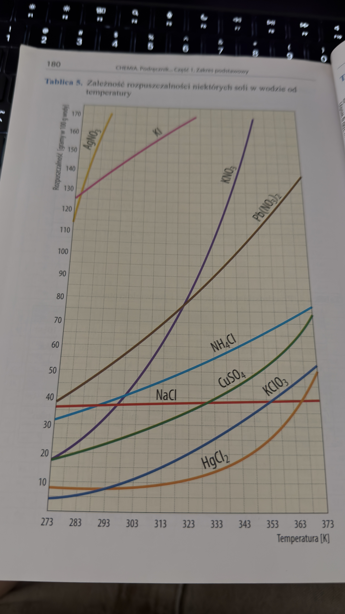
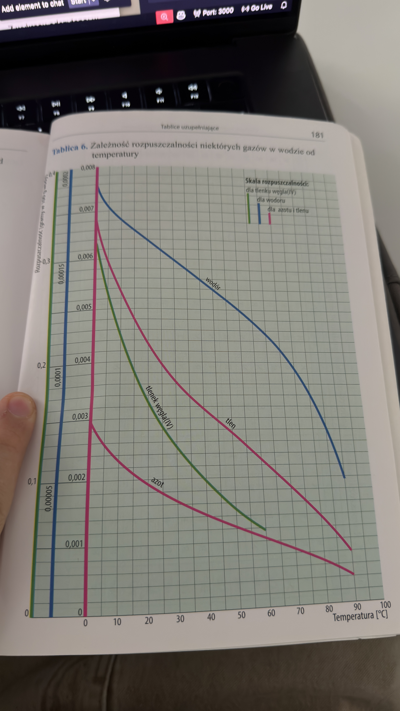

Podstawy
- Eluent - ciecz (lub mieszanina cieczy), która przeplywa przez faze stacjonarna i wymywa/rozdziela skladniki mieszaniny (np. w chromatografii).
- Rozpuszczalnosc - masa substancji, ktora rozpuszcza sie w 100 g wody w danej temperaturze.
Przeliczanie temperatury: 0°C = 273 K, czyli
K = °C + 273 oraz °C = K - 273.
Zakres sprawdzianu - Roztwory
- rodzaje mieszanin
- metody rozdzielania mieszanin
- rozpuszczanie mieszanin (krzywe rozpuszczalnosci)
- obliczanie stezenia procentowego i molowego (zadania typu 1,2/141)
- rozcienczanie i zatezanie roztworow (schemat krzyzowy)
Rodzaje mieszanin
- Mieszanina - uklad zlozony z co najmniej 2 substancji, ktore nie sa ze soba chemicznie zwiazane.
- Jednorodna (homogeniczna) - w kazdym miejscu wyglada tak samo, skladniki nie sa widoczne golym okiem (np. sol + woda, powietrze).
- Niejednorodna (heterogeniczna) - widac co najmniej 2 fazy, skladniki da sie odroznic (np. piasek + woda, olej + woda).
- Roztwor = substancja rozpuszczona + rozpuszczalnik (np. NaCl + H2O).
Metody rozdzielania mieszanin
- Saczenie (filtracja) - oddzielanie ciala stalego od cieczy
- Dekantacja - zlewanie cieczy znad osadu
- Odparowanie - odzysk substancji stalej z roztworu
- Destylacja - rozdzial cieczy o roznych temperaturach wrzenia
- Krystalizacja - wydzielanie kryształów z roztworu
- Chromatografia - rozdzial skladnikow na podstawie ruchliwosci
Na czym polega destylacja?
- Podgrzewasz mieszanine cieczy.
- Skladnik o nizszej temperaturze wrzenia paruje pierwszy.
- Para przechodzi do chlodnicy i skrapla sie.
- Otrzymujesz destylat (oddzielony skladnik), a drugi skladnik zostaje w kolbie.
Przyklad: rozdzial etanolu i wody albo odsalanie wody morskiej.
Krzywe rozpuszczalnosci
Wykres pokazuje, ile gramow substancji rozpuszcza sie w 100 g wody w danej temperaturze.
Jak odczytywac wykres?
- Znajdź zadaną temperaturę na osi poziomej (oś X na dole).
- Przesuń się pionowo do góry, aż przetniesz linię (krzywą) wybranej substancji (np. KNO3).
- Z tego punktu przecięcia przesuń palcem poziomo w lewo, by odczytać wartość z osi pionowej (oś Y po lewej).
- Odczytana liczba to maksymalna masa tej substancji, jaka rozpuści się w 100 g wody.
Ocena nasycenia (punkt na wykresie):
- Punkt na samej krzywej - roztwór nasycony (idealnie rozpuszczona maksymalna ilość, nie można więcej).
- Punkt pod krzywą - roztwór nienasycony (jest "miejsce" żeby jeszcze coś dosypać i się rozpuści).
- Punkt nad krzywą - roztwór nasycony z osadem na dnie (wsypano więcej niż się rozpuści, nadmiar leży nierozpuszczony - lub przesycony po delikatnym chłodzeniu).


Zadania z krzywych (typ 1 i 2 jak str. 124)
Typ 1 - ile max sie rozpusci?
Z wykresu odczytano: w 40°C rozpuszczalnosc KNO3 = 64 g / 100 g wody.
Pytanie: ile rozpusci sie w 250 g wody?
64 g * 2,5 = 160 g.
Odp: maksymalnie 160 g (roztwor nasycony).
Typ 2 - ile wykrystalizuje po ochlodzeniu?
W 80°C rozpuszczalnosc soli = 170 g / 100 g wody, a w 20°C = 32 g / 100 g wody.
Mamy roztwor nasycony przygotowany w 80°C (100 g wody). Po
ochlodzeniu do 20°C zostanie rozpuszczone 32 g, czyli
170 - 32 = 138 g wykrystalizuje.
Odp: wytraci sie 138 g substancji.
Stezenie procentowe (Cp)
Wzory:
Cp = ms/mr * 100%ms = Cp * mr / 100%mr = ms * 100% / Cp
gdzie: ms - masa substancji, mr - masa roztworu.
Przyklad: ms = 38 g, mr = 138 g ->
Cp = 38/138 * 100% ≈ 27,5% (ok. 27%).
Stezenie molowe (Cm)
- Cm - stezenie molowe, jednostka: mol/dm³
Cm = n / Vn = m / M
gdzie: n - liczba moli, V - objetosc roztworu w dm³, m - masa substancji, M - masa molowa.
Przyklady obliczen
1 Oblicz Cm
Roztwor zawiera 0,5 mola substancji w 50 cm³ wody.
50 cm³ = 0,05 dm³, wiec Cm = 0,5 / 0,05 = 10 mol/dm³.
2 Oblicz objetosc roztworu 0,5 mol/dm³ Na2CO3 z 20 g substancji
- M(Na2CO3) = 106 g/mol
n = m/M = 20/106 ≈ 0,1887 molV = n/Cm = 0,1887/0,5 ≈ 0,377 dm³ ≈ 0,38 dm³
Co robic najpierw? (schemat)
- Sprawdz, czego szukasz: Cp, Cm, ms, mr, n czy V.
- Zamien jednostki (zwlaszcza cm³ -> dm³).
- Zapisz dane i wybierz wzor.
- Podstaw liczby i policz.
- Na koncu sprawdz, czy wynik ma sens i dobra jednostke.
Rozcieńczanie i zatężanie (Reguła krzyżowa)
Stosujesz ją, gdy mieszasz dwa roztwory o różnych stężeniach (albo roztwór z wodą / czystą substancją) żeby otrzymać nowe stężenie pośrednie.
Schemat (odejmujemy na krzyż – zawsze od większej wartości mniejszą!):
C₁ (stęż. 1) |C₂ - Cₓ| (części masowe r-ru 1)
\ /
Cₓ (oczekiwane)
/ \
C₂ (stęż. 2) |C₁ - Cₓ| (części masowe r-ru 2)
Ważne skróty:
- Jeśli dodajesz tylko wodę (rozpuszczalnik), to jej stężenie przyjmujesz jako C = 0%.
- Jeśli dodajesz czystą substancję stałą (np. dosypujesz soli), to jej stężenie przyjmujesz jako C = 100%.
Przykład z zadania:
Chcesz otrzymać roztwór 15% ze zmieszania roztworów 25% i 10%. Odejmujesz po ukosie:
25% (15 - 10) = 5 części r-ru 25%
\ /
15%
/ \
10% (25 - 15) = 10 części r-ru 10%
Wniosek: Musisz zmieszać roztwory w proporcji masowej
5 : 10. Po podzieleniu na 5 wychodzi stosunek
1 : 2.
(Zatem na każde 100 g roztworu 25% musisz wziąć 200 g roztworu
10%!).
Uwaga do Twojego przykladu z 18%
Jesli Cp = 18% i mr = 550 g, to najpierw liczysz
ms = 0,18 * 550 = 99 g.
Potem przy ponownym liczeniu Cp musisz dzielic przez
to samo mr: 99/550 * 100% = 18% (a nie 99/650).